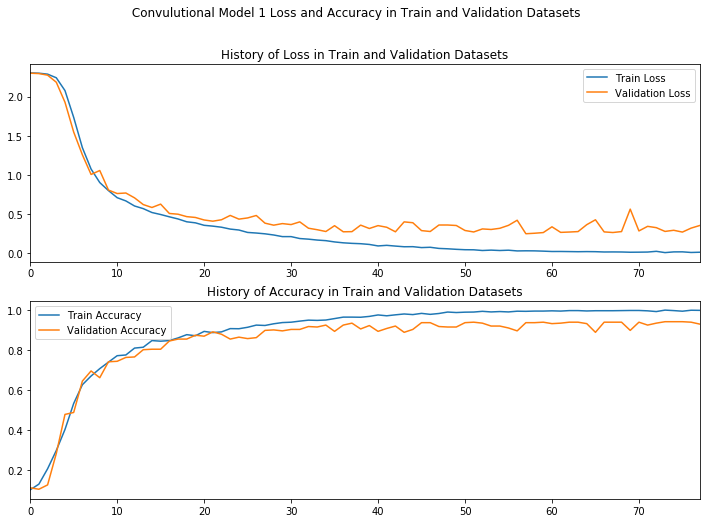

In [3]: runfile('C:/Users/Muhammad.Bilal/Downloads/Sign-Language-Digits-Recognition/DL_Assignment_3.py', wdir='C:/Users/Muhammad.Bilal/Downloads/Sign-Language-Digits-Recognition')
(2062, 64, 64)
(2062, 10)
================================================================
Final Model with Conv 4 and 3 FC layers and 3 * 3 filter size
================================================================
[INFO]:Convolutional Model 1 created...
[INFO]:Convolutional Model 1 compiled...
[INFO]:Convolutional Model 1 training....
Epoch 00078: early stopping
[INFO]:Convolutional Model 1 trained....
[INFO]:Train Accuracy:0.985
[INFO]:Validation Accuracy:0.930

In [4]: